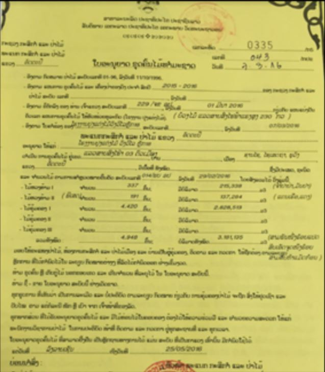
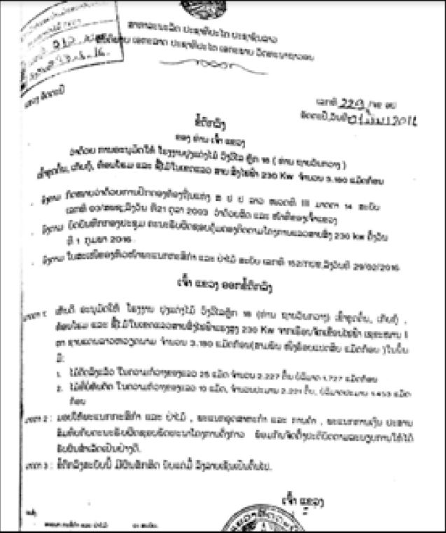
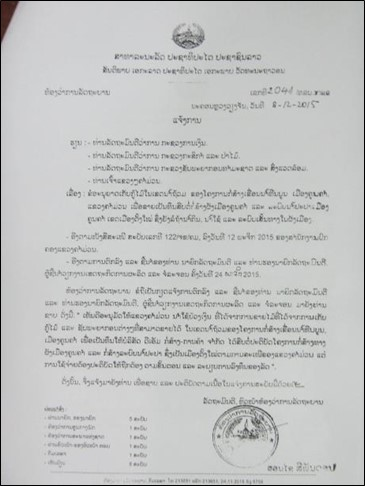
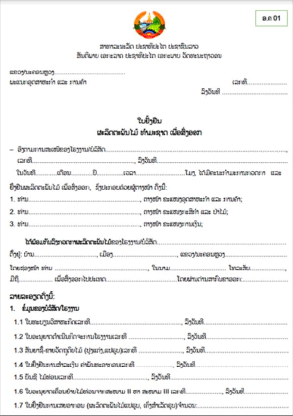
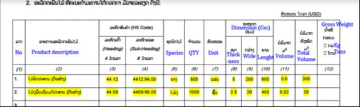
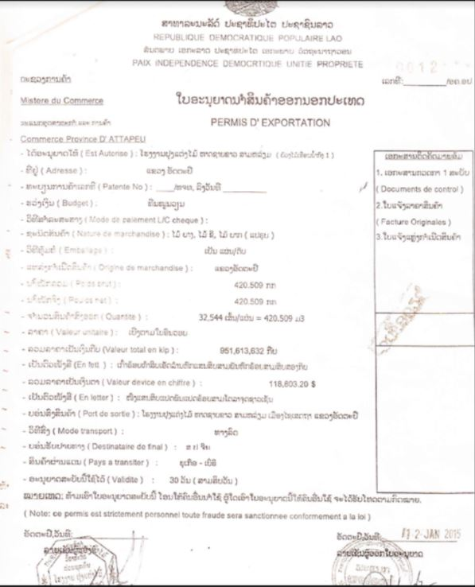
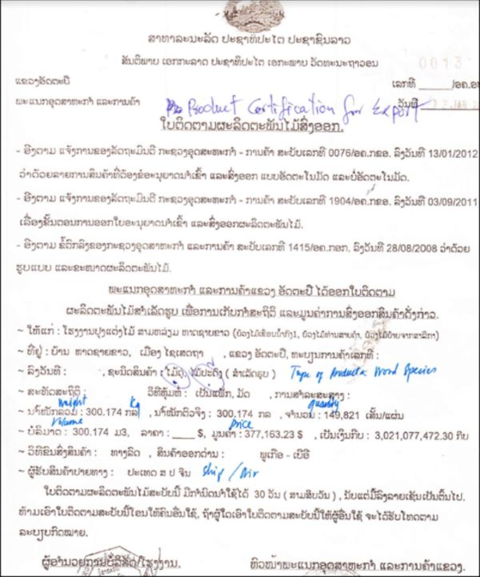
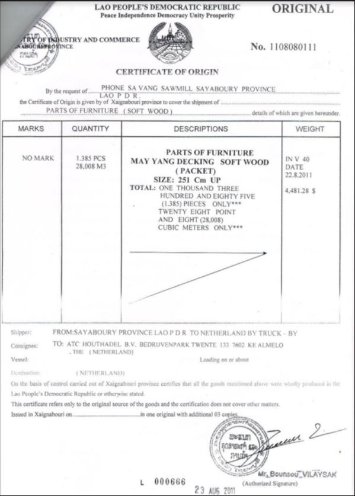
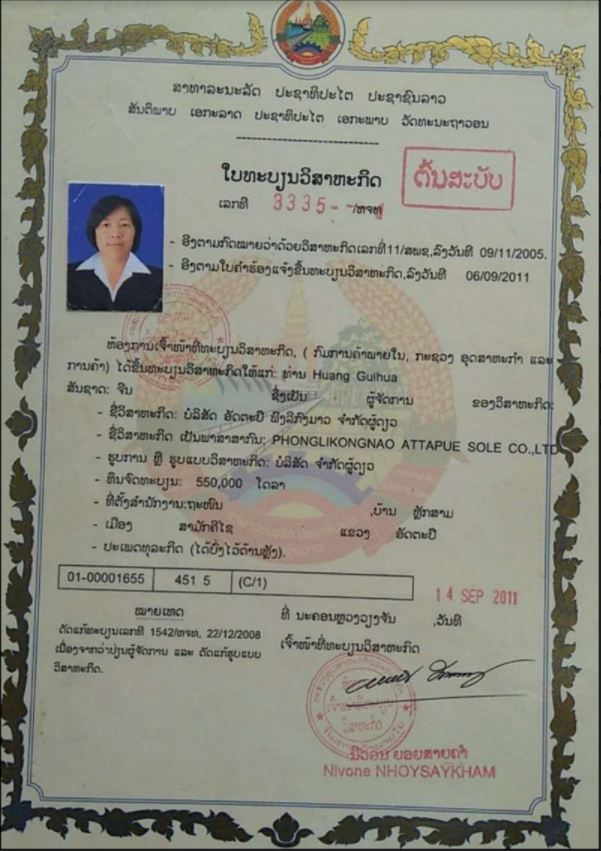

Implementing Timber Leglity Assurance Systems
A guide to comply with timber legality requirements in Cameroon and to support due diligence
Lao PDR’s Timber legality requirements
Lao PDR is negotiating a Voluntary Partnership Agreement with the European Union. A Timber Legality Assurance System is being developed in this country. It ensures timber products comply with national laws and helping to prevent the import of illegal timber into other countries. This system depends on the government developing effective control and verification system and operators complying with legal requirements and conducting due diligence. By being aware of the legal requirements in Lao PDR highlighted below, law enforcement agencies and importers can implement control measures to promote the legal timber being harvested, transported and traded. Importers and verification agencies may refer to or use this definition in implementing due diligence.
Suggestions for developing and implementing due diligence for importers
Due diligence and complexity

Developing due diligence systems
Implementing due diligence
The following documents are selected in accordance with Nigeria’s legal definition and/or legal requirements in different stages of the supply chain.
Harvesting permit
  The harvesting permit is signed by the Head of the Provincial Agriculture and Forestry Office (PAFO) and issued to the loggers. Check signatures, seals, compare annual harvesting quotas, species of trees, harvesting volume.
Notification from Government for conversion

Notification from Government for conversion is signed by the Prime Minister or the Minister-Chairman of the Prime Minister's Office and assigned to the Minister of Finance, the Ministry of Natural Resources and Environment and the Governor of the Province. Check signatures, seals and date of signature, cross-check the area, species of wood and volume of harvesting.
Verification on Log list
The log list is signed, stamped and verified by a committee consisting of surveyors, district-level forestry officers and the head of the provincial Department of Agriculture and Forestry. Check signatures, seals of participating parties, slat number, length, diameter, volume, species, harvesting address.
Pre-harvest inventory
Pre-harvest inventory is signed by PAFO staff and Head of PAFO. Check signatures, seals, inventory maps, logs list.
Registration into state assets
Registration into state assets is signed by the Head of the Public Property Management Department. Check signature, seal, valid date on documents.
Selling-purchasing contract
The sale and purchase contract is signed by the provincial Department of Industry and Trade (POIC) and the timber purchasing company. Check signatures, seals, suitability dates, wood species, diameters, volumes and timber sources.
The summary report of provincial harvesting operation
The summary report of Provincial harvesting operation made by the logging unit, production forest management unit and signed and certified by the Provincial Department of Forestry. Check signature, seal, date of signing, compare timber species, volume, source of timber, price and payment.
Report on timber output and balance
Report on timber output and balance is signed and stamped by the factory supervisor, the representative of the enterprise, and the Head of the District Deparment of Industry and Trade (DOIC). Check the report release date, DOIC signature and seal.
Village Forest Management Agreement (conversion forest, plantation forest)
The village forest management agreement is signed by the forestry company and the village community’s representative. Check signatures of parties involved, cross-check documents on land/forest zoning maps, land acquisition and compensation, resettlement plan, meeting minutes.
CITES Permit
The CITES permit is signed and stamped by the CITES Management Authority of the Ministry of Agriculture and Forestry, and issued to the exporter of CITES timber species. Check the validity, signature and seal, name of the timber owner, species and volume on the permit.
Invoice for of royalty payment
Invoice for of royalty payment is signed by Head of Public Property Management Department. Cross-check the log list, check the signature, valid signing date.
Annual tax payment certificate
Annual tax payment certificate is signed by the Director of the Provincial Tax Department. Check that the company name and address, signature and seal are valid.
Money transfer receipt to the provincial treasury
Money transfer receipt to the provincial treasury is signed by the staff of the Provincial Treasury, the Provincial Department of Finance and the recipient. Cross-check the log list with the source, species and volume, signature and seal on the receipt.
Transport slip
Transport slip is signed by DAFO officer, truck driver and DAF officer. Check signatures, timber sources, timber information.
Transport Permit
The transport permit is signed by the Head of PAFO Department. Check timber source, timber information, signature, seal and valid date, cross-check valid means of transport.
Export certificate for wood product
    Export certificate for wood product is signed by the business owner, and a committee consisting of the Department of Industry and Trade (POIC), the Department of Agriculture and Forestry, and the Department of Finance. Check signature, seal, company name and address, cross-check volume, validity of unit.
Enterprise registration certificate
Enterprise registration certificate is signed by the Business Registration Authority (Ministry of Industry and Trade, or Provincial Department of Industry and Trade or District Chamber of Industry and Trade). Check the validity of date, signatures and seals of lawful authorities.
Factory Operation Certificate
Factory operation certificate is signed by Director of POIC. Check signatures, seals, business codes, and validity date of certificate.
Approval of social and environmental impact assessment report
The environmental and social impact assessment report is signed by the General Director of General Administration of Environment and Water Resource and issued an environmental compliance certificate. Check signature, seal, date of signing, decision number, name and address of project owner.
Labor contract
The labor contract is drawn up by the company and is signed by the employer and the employee. Check that the contract contents, information, signatures and seals are complete and accurate.